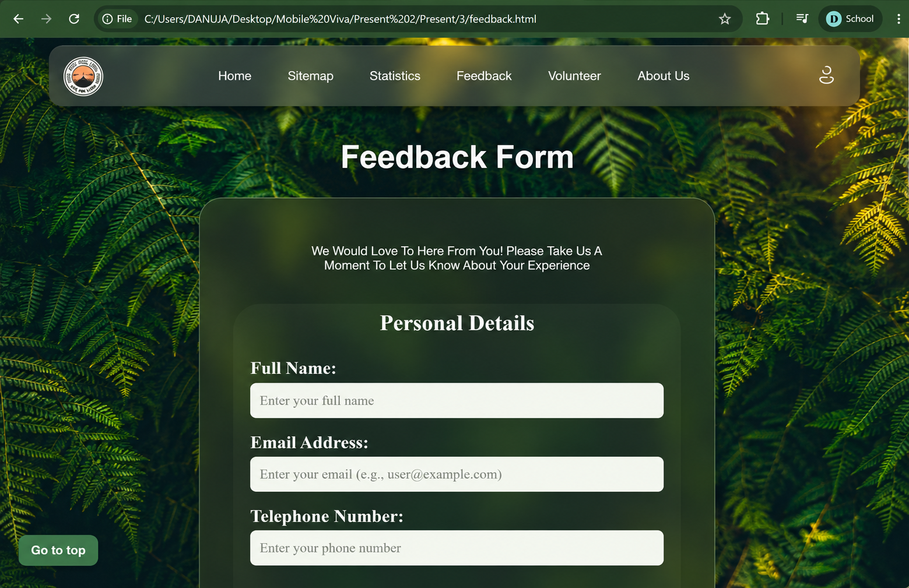
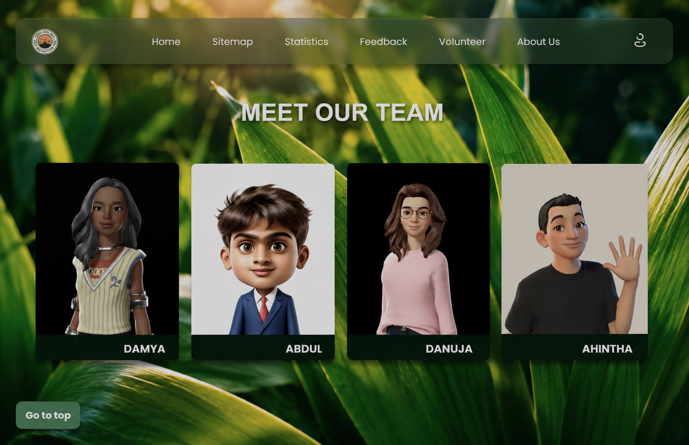
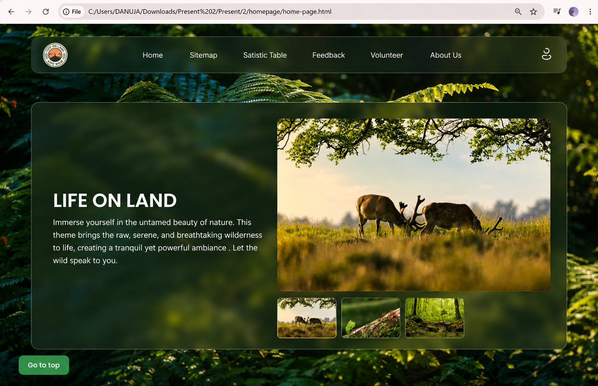
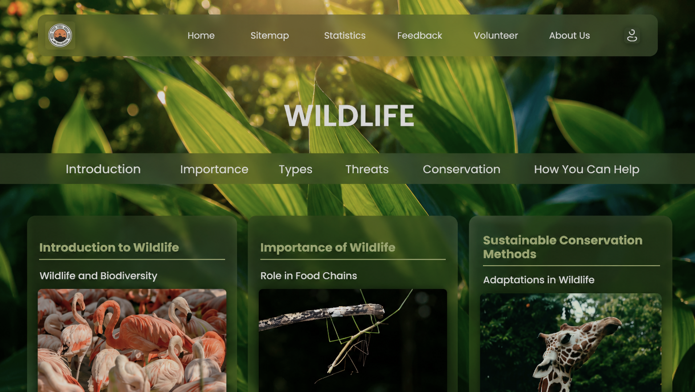
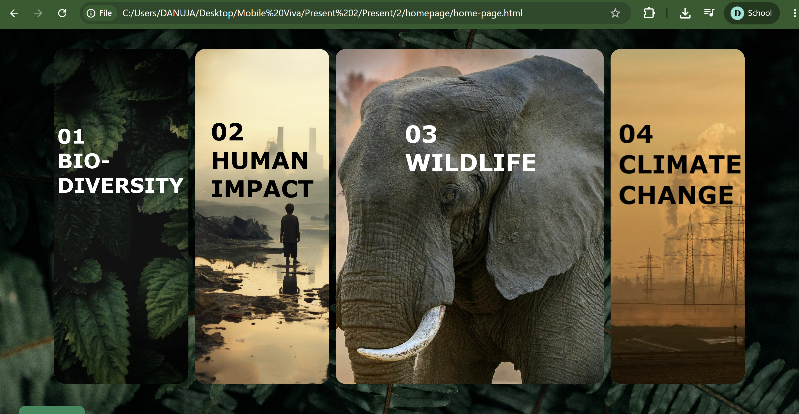
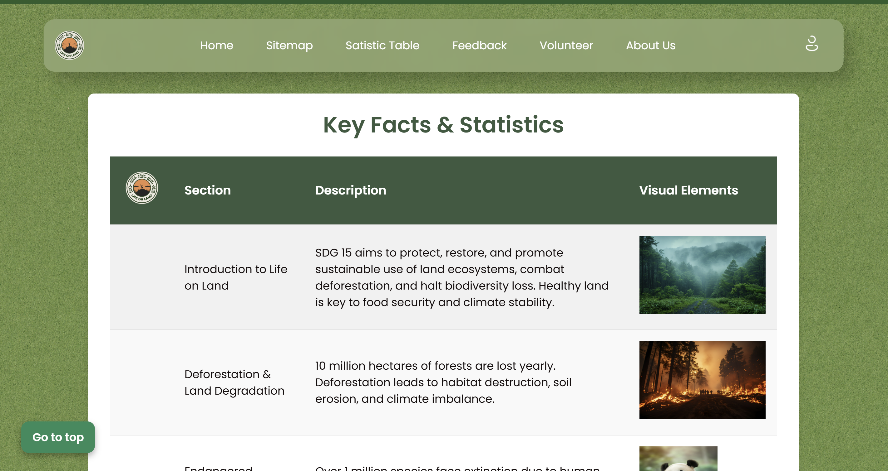

Web Design & Development · Group Project
Life on Land
A responsive, nature-themed website built for the Web Design and Development module, exploring environmental awareness through structured web design and collaborative team development.

A responsive, nature-themed website built for the Web Design and Development module, exploring environmental awareness through structured web design and collaborative team development.
Life on Land is a responsive website built by a four-person team for the Web Design and Development module (4COSC011W). The project covered the end-to-end design and development lifecycle: from concept and visual identity all the way through to a fully functioning multi-page web application.
My specific contributions were the Feedback system and Team page, along with supporting the overall visual identity and navigation design. The site uses a dark, nature-themed aesthetic with rich imagery, structured typography, and a validated interactive feedback form.
SDG Connection: The project theme tied into UN Sustainable Development Goal 15 (Life on Land), using web design as a tool to raise awareness of biodiversity, conservation, and the natural environment.
The project was structured as a collaborative Agile-like workflow with weekly reviews, online and in-person sessions, and clearly defined ownership per component. Each team member owned specific pages and features from design to delivery.
Within the team structure I focused on two key sections: the Feedback system and the Team page. Both required careful attention to interaction design, form validation, and visual consistency with the established site template.


The two primary pages I designed and developed
The final site brings together all six sections into a cohesive, responsive web experience. The dark forest aesthetic carries consistently from the splash screen through to the data tables and feedback form.

Homepage of the completed Life on Land website



Live deployment is in progress. View the source code on GitHub.